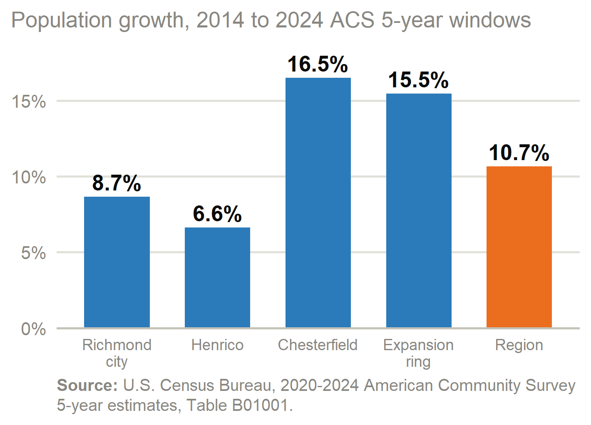
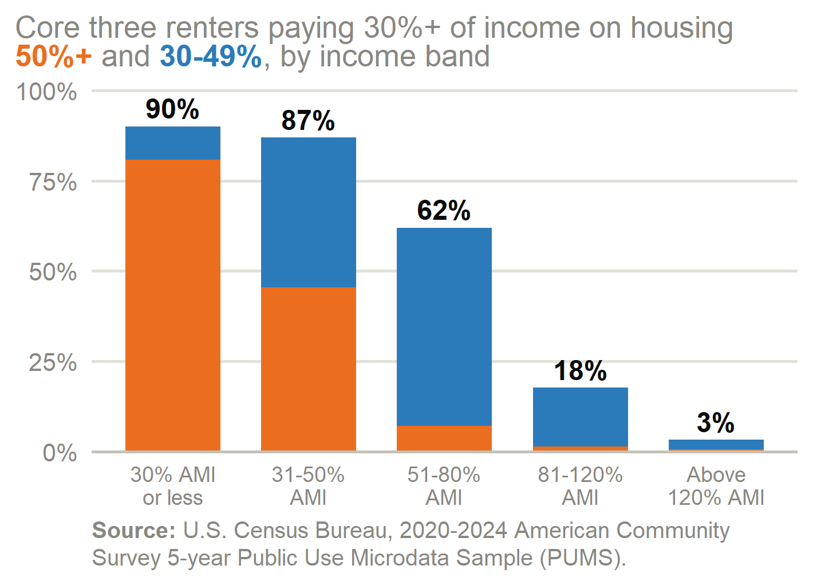
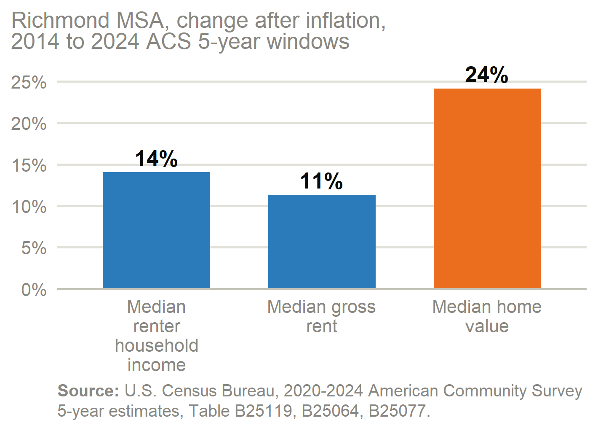
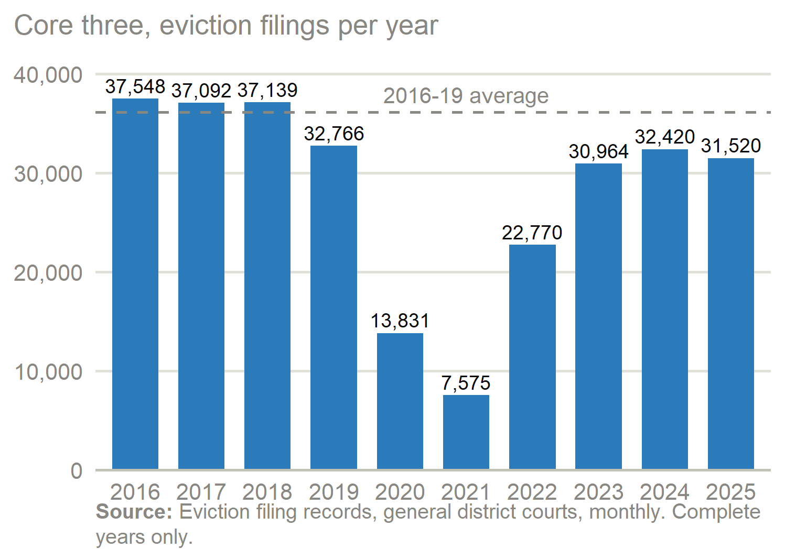
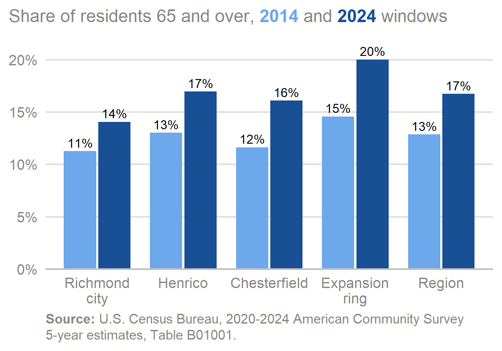
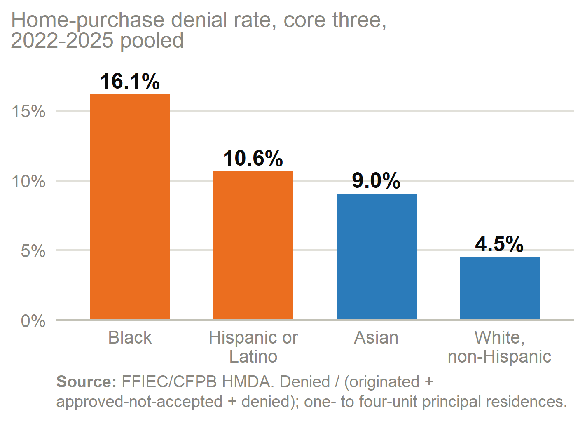
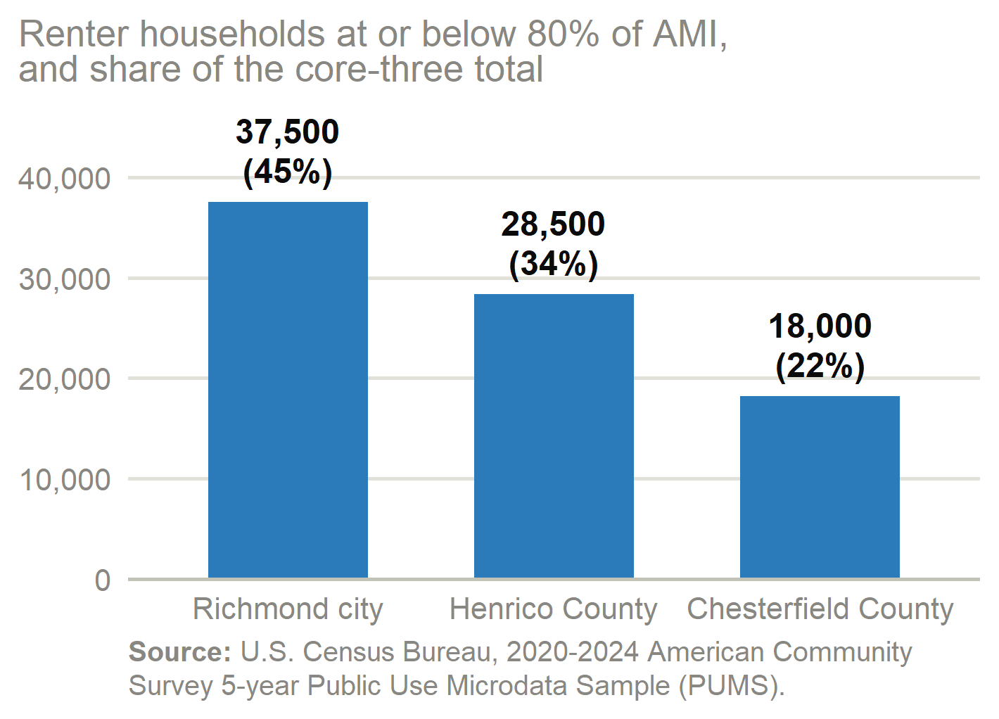

What the public data say, and where BHC’s work fits
November 2026
10.7% population growth, 17-locality region, 2014 to 2024 windows
1,341,248 people live in the region today
90% of regional growth, 2020-2025, comes from new people moving into the region

84,000 City and surrounding county renter households at or below 80% of area median income (AMI): 60% of renters
81% of renters at 30% of AMI or less pay half or more of income on housing

51% of renter households pay 30% or more of income on housing (51% in the 2014 window)
20% of owners pay 30% or more, down from 26%

15% below the 2016-19 monthly average, over the latest 12 months
about 2,600 filings a month in the core three
Filings are landlord court requests, not completed evictions. The 2020-21 low reflects pandemic moratoria and rental assistance.

about 12,000 core-three renter households at or below 50% of AMI with a householder 65 or over
20% of expansion-ring residents are 65 or over, the oldest part of the region
The senior count is a PUMS survey estimate from 509 sample households. Quote it as “about”.

5.9 to 6.5 typical home value as a multiple of typical renter household income, Richmond MSA
3.6x Black applicants were denied home-purchase loans this many times as often as non-Hispanic White applicants


55% of lower-income renter households live in Henrico or Chesterfield, not Richmond city
22% of Richmond city’s housing is in buildings of 20+ units, the only multifamily-heavy core locality
63% of core-three housing is detached single-family homes
| Bill | Subject | Patron | LIS status |
|---|---|---|---|
| HB79 | Mold remediation; tenant lawsuits | Del. Price | In committee |
| HB143 | Surplus public land for affordable housing | Del. Gardner | In committee |
| HB183 | First-time home buyer savings plan | Del. Reid | In Senate committee |
| HB419 | 12-month limit on land use decisions | Del. Cole | In committee |
| HB464 | State accessory dwelling unit guide | Del. Cohen | In committee |
| HB1376 | Urban public-private redevelopment fund | Del. Bulova | In committee |
| HB1409 | Fees barred from rental agreements | Del. Schmidt | In committee |
| SB349 | Pre-tenancy fees and deposits | Sen. VanValkenburg | In committee |
| SB717 | Transit-oriented housing overlay districts | Sen. Salim | In House committee |
Status as shown on the Virginia Legislative Information System (LIS) on November 12, 2026, before the session opens. Bill text can change in committee.
| Figure | Value | Margin of error (90%) | Where | Note |
|---|---|---|---|---|
| Renter households at or below 80% of AMI | about 84,000 (60% of renters) | ±3,000 | Core three | Say "about" |
| Renters at or below 30% of AMI paying half or more of income on housing | 81% | ±3.0 pts | Core three | |
| Renter households paying 30%+ of income on housing | 51% | ±1.1 pts | 17-locality region | Not improved since 2014 |
| Senior renter households at or below 50% of AMI | about 12,000 | ±1,100 | Core three | Small sample; say "about" |
| Typical home value vs. typical renter household income | 5.9 to 6.5 times | ±0.17 | Richmond MSA | |
| Home-purchase denial rate, Black vs. White non-Hispanic applicants | 16% vs. 4% | ±0.6 pts / ±0.2 pts | Core three | Loan records; some lack race data |
AMI = area median income. ACS and PUMS figures are the 2024 5-year window. Margins of error are published ACS values or PUMS replicate-weight standard errors x 1.645 (see r/summary_audit.R).
Full detail, definitions and sources: the Summary and Data Notes pages of the RVA Sourcebook. Questions?